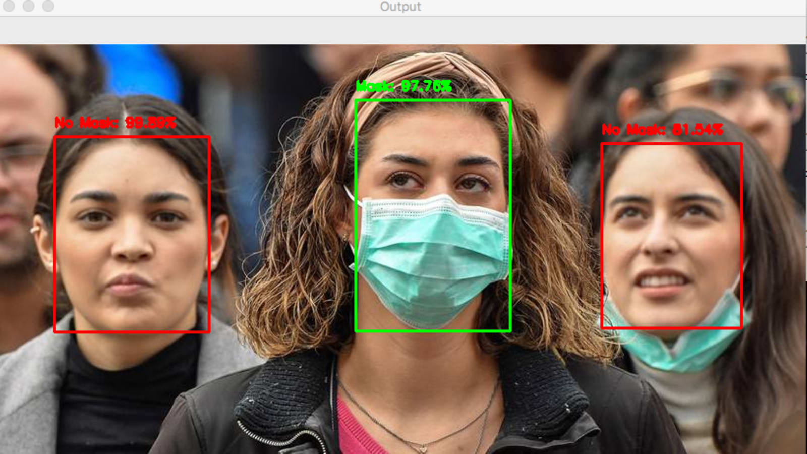

{% extends 'base.html' %}


{% block title %}Homepage{% endblock %}

{% block content %}
<div class="container-fluid text-center">
  <div class="row content">
    <div class="col-sm-2 sidenav">
      <p><a href="https://pharmeasy.in/blog/covid-19-how-can-social-distancing-help/">Importance of social
          distancing</a></p>
      <p><a href="https://www.cdc.gov/coronavirus/2019-ncov/prevent-getting-sick/cloth-face-cover-guidance.html">Why
          masks are effective</a></p>
      <p><a href="https://www.xovis.com/en/products/detail/face-mask-detection/">Benefits of mask detection
          software</a></p>
    </div>
    <div class="col-sm-8 text-left">
      <div class="container">
        <h1><b>MASK DETECTION SOFTWARE</b></h1>
        </br></br>
        
      </div>
      <h1><b><u>Introduction</b></u></h1>
      <h3><b><u>What We Do</u></b></h3>
      <h4>We use a neural network model built on tensorflow to analyze pictures of people wearing mask and predict
        which category they fall under.</h4>
      <hr>


      <hr>

    </div>
    <div class="col-sm-2 sidenav">
      <div class="well">
        <p></p>
      </div>
      <div class="well">
        <p></p>
      </div>
    </div>
  </div>
</div>

{% endblock %}